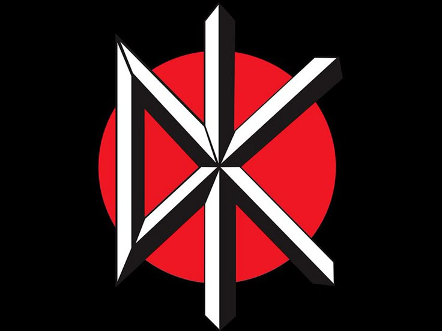
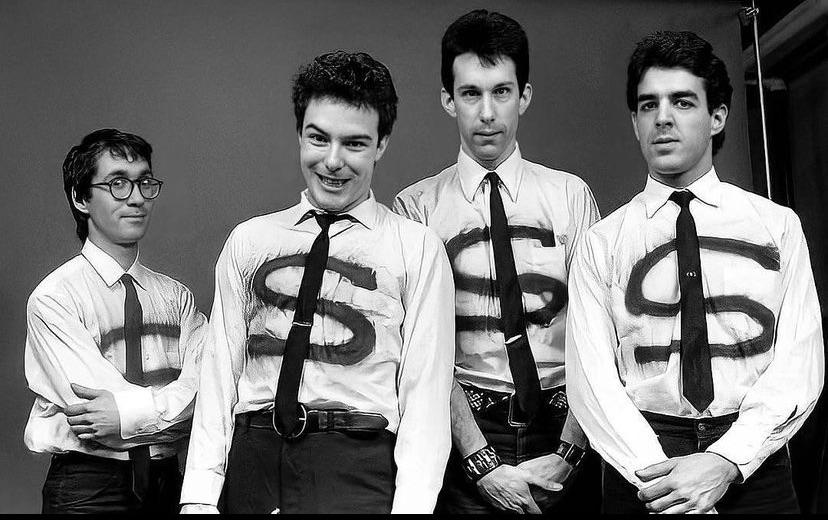

A Dead Kennedys é uma empresa de desenvolvimento de jogos fundada no início dos anos 2010 por um grupo de criadores independentes apaixonados por narrativas sombrias e experiências interativas ousadas. Desde sua origem, o estúdio se destacou por desafiar convenções da indústria, apostando em jogos com forte carga artística, crítica social e trilhas sonoras marcantes. Com sede em um ambiente criativo e colaborativo, a Dead Kennedys ganhou notoriedade por seus títulos de atmosfera intensa, que misturam elementos de horror psicológico, distopia e humor ácido. Seus jogos frequentemente exploram temas como decadência urbana, identidade e conflitos sociais, atraindo um público fiel que busca experiências fora do padrão comercial. Ao longo dos anos, a empresa consolidou sua reputação como um estúdio inovador e provocador, mantendo-se independente e fiel à sua visão criativa, mesmo diante das pressões do mercado.
A Dead Kennedys surgiu no início da década de 2010, em um período de transformação no mercado de jogos independentes. Fundada por um pequeno coletivo de desenvolvedores, artistas e músicos, a empresa nasceu da insatisfação com a crescente padronização da indústria. Enquanto grandes estúdios apostavam em fórmulas seguras, o grupo queria explorar o lado mais cru, experimental e provocativo dos videogames. Nos primeiros anos, o estúdio operava de forma totalmente independente, desenvolvendo seus projetos em espaços compartilhados e até mesmo de forma remota. Com poucos recursos, mas muita identidade, lançaram seu primeiro jogo — um título experimental de horror psicológico — que rapidamente chamou atenção em comunidades indie por sua estética agressiva, narrativa fragmentada e trilha sonora marcante. O sucesso inicial não veio em números massivos, mas sim na forma de reconhecimento crítico e na construção de uma base de fãs fiel. A Dead Kennedys passou a ser vista como um estúdio que não tinha medo de abordar temas desconfortáveis, como decadência urbana, alienação social, crise de identidade e conflitos políticos. Com o passar dos anos, a empresa evoluiu tecnicamente, mas sem abandonar sua essência. Seus jogos começaram a incorporar elementos de distopia, humor ácido e críticas sociais mais diretas, criando experiências que misturavam entretenimento e reflexão. Cada lançamento reforçava sua reputação como um estúdio autoral, onde a visão criativa sempre vinha antes das tendências de mercado. Mesmo diante de oportunidades de crescimento rápido — como parcerias com grandes publishers — a Dead Kennedys optou por manter sua independência. Essa decisão permitiu preservar sua liberdade artística, mas também trouxe desafios, como limitações financeiras e maior exposição a riscos comerciais. Ainda assim, o estúdio encontrou formas alternativas de se sustentar, utilizando financiamento coletivo, distribuição digital e o apoio direto de sua comunidade. Esse relacionamento próximo com o público se tornou um dos pilares da empresa, transformando jogadores em verdadeiros apoiadores da marca. Hoje, a Dead Kennedys é reconhecida como um símbolo de resistência criativa dentro da indústria de jogos. Seus projetos continuam desafiando convenções, explorando novas linguagens e provando que videogames podem ser mais do que entretenimento — podem ser uma forma de expressão artística e crítica social.

A Dead Kennedys foi fundada no início dos anos 2010 por quatro criadores independentes com perfis distintos, mas unidos por uma mesma inquietação criativa: Jello Biafra, East Bay Ray, Klaus Flouride e D. H. Peligro. Eles se conheceram em comunidades online voltadas ao desenvolvimento de jogos independentes, onde compartilhavam ideias experimentais e críticas à falta de inovação na indústria. Jello Biafra era o principal responsável pela direção criativa e narrativa do estúdio. Com uma visão provocadora, ele defendia que jogos deveriam ir além do entretenimento e funcionar como ferramentas de reflexão social. East Bay Ray atuava como o programador principal, traduzindo conceitos complexos em mecânicas inovadoras e desafiando padrões tradicionais de gameplay. Klaus Flouride cuidava da identidade visual, criando cenários e personagens marcados por uma estética sombria e urbana. Já D. H. Peligro era responsável pelo design de áudio, desenvolvendo trilhas intensas que ampliavam o impacto emocional das experiências. O início da empresa foi marcado por limitações financeiras e um processo de desenvolvimento instável, mas altamente criativo. Trabalhando de forma independente, os fundadores produziram seu primeiro jogo experimental, que chamou atenção por sua atmosfera pesada, narrativa não linear e forte carga simbólica. Embora não tenha alcançado grande sucesso comercial, o projeto ajudou a consolidar a reputação do estúdio dentro da cena indie. Com o passar do tempo, a Dead Kennedys passou a desenvolver jogos mais ambiciosos, explorando temas como decadência urbana, identidade e conflitos sociais. A empresa manteve sua proposta de criar experiências ousadas, mesmo diante de pressões do mercado por maior acessibilidade e apelo comercial. Essa postura resultou tanto em reconhecimento crítico quanto em desafios financeiros e exposição a controvérsias. Apesar das dificuldades, os fundadores optaram por manter a independência do estúdio, priorizando a liberdade criativa acima de acordos comerciais mais seguros. Esse posicionamento fortaleceu a relação com seu público, que passou a enxergar a empresa como um símbolo de autenticidade no cenário dos jogos independentes. Ao longo dos anos, a Dead Kennedys se consolidou como um estúdio inovador, conhecido por desafiar convenções e explorar novas formas de expressão dentro dos videogames. A colaboração entre seus fundadores, marcada por diferenças criativas e visões complementares, foi essencial para construir a identidade única que define a empresa até hoje.